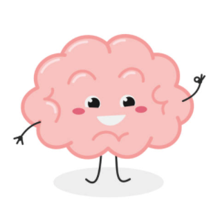
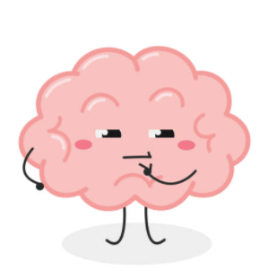
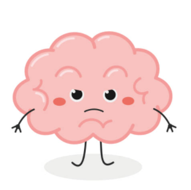
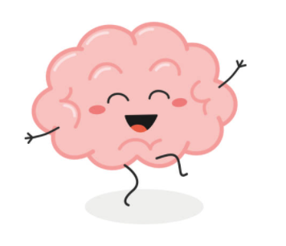

Welcome To Mind Aid
Welcome to Mind Aid, a not-for-profit charity whose aim it is to connect people who suffer from mental health issues with those who can help them. Before we steer you towards an appropriate care provider, we ask that you take our simple 9 question quiz. There are no wrong answers. It is simply designed to give us a sense of where your mental health currently sits, therefore helping us to ascertain the kind of level of help you might need. This is not designed to give a clinical diagnosis; rather it should be seen as the first step towards a happier and healthier life with a clear and positive mind.
Mental Health Facts
It has been some time since mental health was first classified as an illness and yet it still retains a dangerous stigma about it. There is a mystery about what it means, and a people continue to reserve caution about openly discussing it. The truth of the matter is that it is an illness and like any other illness, it is treatable. But equally, like any other illness, the sooner you are able to diagnose it, the easier it is to do so. The first step towards tackling the subject and stripping it down to its core is to demystify the truth from the fiction.
- 10% of the world’s population currently suffers from some form of depression.
- 1 in every 6 people admit to experiencing a common mental health problem in any given week.
- Depression rates are on the rise, especially in the young, where they have almost doubled in the last decade.
- 1 in 5 people under the age of 18 will develop a mental illness in their lifetime.
- Members of the LGBTQ+ community are almost 3 times more likely to experience a mental health condition than other members of society.
- More than 25% of adults living with serious mental illness also struggle with substance abuse.
- Sufferers of mental illness are especially adept at hiding it and can be very reluctant to seek help themselves. If you know anyone who you think might benefit from speaking to us, please put them in touch.

Mental Health Fibs
While the subject of mental illness has been heavily researched in the scientific community, there remains a society-wide ignorance that prevails, stemming from the ingrained taboo that surrounds the wider topic of mental health. People either don’t want to know about it, because it doesn’t affect them, or they don’t want to talk about it for fear of what their friends or colleagues might think of them if they do. As a result, lazy stereo-types and unsubstantiated myths have entered the conversation that hide the truth inside the fiction.
- Mental health problems won't affect me. It just isn't true. The statistics show that the chances of you or someone you know fuffereing from mental illness at some juncture is very high.
- Children are too young so suffer from mental issues. Again, the statistics show otherwise. With the prevailance of social media, the strain and pressure focred upon young minds has never been more accute.
- Mental health problems make people violent, antisocial and unpredictable. This is true in less that 5% of cases in sufferes with clinical disorders. The great majority of mental health sufferers are able to hide their illness.
- Suffering from mental illness is proof of some kind of flaw or weakness in my personality. The opposite of this is true. Quite often, it is peple with strong personalities who suffer the most, because they tend to be more reluctant to discuss it.
- In time it will go away. This is the greatest myth of them all. In time, it will embed itself and get worse. Only with help will you start to feel better. You cannot fix this alone.

Conditions
This is holding text that will be filled in laterThis is holding text that will be filled in laterThis is holding text that will be filled in laterThis is holding text that will be filled in laterThis is holding text that will be filled in laterThis is holding text that will be filled in laterThis is holding text that will be filled in later
- Depression happens to one in 6 people
- Anxiety effects most people before they reach their 18th birthday
- Depression happens to one in 6 people
- Anxiety effects most people before they reach their 18th birthday
- Depression happens to one in 6 people
- Anxiety effects most people before they reach their 18th birthday

Treatments
This is holding text that will be filled in laterThis is holding text that will be filled in laterThis is holding text that will be filled in laterThis is holding text that will be filled in laterThis is holding text that will be filled in laterThis is holding text that will be filled in laterThis is holding text that will be filled in later
- Depression happens to one in 6 people
- Anxiety effects most people before they reach their 18th birthday
- Depression happens to one in 6 people
- Anxiety effects most people before they reach their 18th birthday
- Depression happens to one in 6 people
- Anxiety effects most people before they reach their 18th birthday

Start Your Journey Here